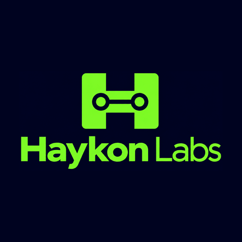

Haykon Labs is an early-stage Web3 development studio founded by Ayoola Okeyode, also known as Haywhy. We design and build decentralized applications, from the smart contracts that hold the logic on-chain to the web interfaces people use to interact with them.
Blockchain technology promises systems that are open, transparent and owned by the people who use them. In practice, too many Web3 products are hard to understand, hard to use and hard to trust. Haykon Labs exists to close that gap. We believe good Web3 software should be secure in its code, clear in its design, and simple enough that someone new to the space can use it without a manual.
Haykon Labs is in its foundation phase. Our founder is working through a structured 90-day program covering web fundamentals, React, Solidity and full-stack dapp development. By the end of it, we aim to have several projects deployed to public testnets with verified contracts and live frontends, forming the first body of work for the studio.
After the foundation phase, we plan to take on small client projects and hackathon builds, and to contribute to open-source Web3 tools. We are open to collaborating with other developers, designers and early-stage teams who want to build carefully.